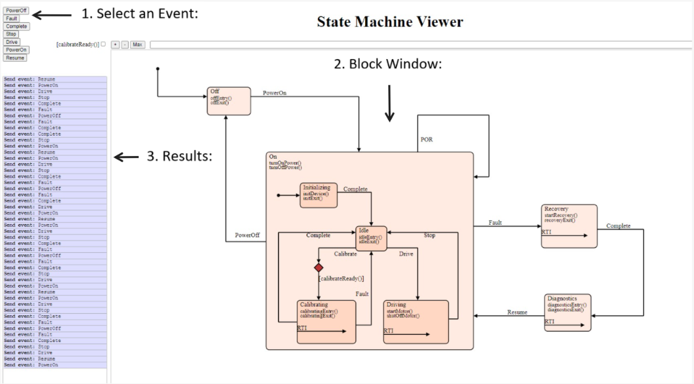

Help Page
* To get started, you will need to drag/drop (upload) an XML model file of a State Machine.
* After the file is uploaded, the block diagram will initiate.
Page Layout

There are three main sections to interact with on the page.
Each section is described in detail below.
1. Select an Event:
The events and guards provided in the XML file become buttons that the user can press
to send the event.
The guard buttons are check boxes to set to true and false.
The color of the guard turns green when selected to indicate true. The unchecked box
will default to red to indicate the guard is not set.
2. Block Window:
The diagram represents a model of the system with its corresponding states and transitions.
The active state will be highlighted along with the path that that it took to get there.
3. Results:
This is text log viewer that will update just as the block window updates to record the history of the state machine.
FAQs:
What file types are supported and where are they generated from?
The XML model file comes from a UML Statechart Modeling Tool.
A Computer Aided Software Engineering Tool (CASE) is used to enter UML Statechart
designs and generate a readable XML file with graphics information in it.
We recommend to use a .qm file generated from the QM Model-Based Design Tool.
Additional Resources: